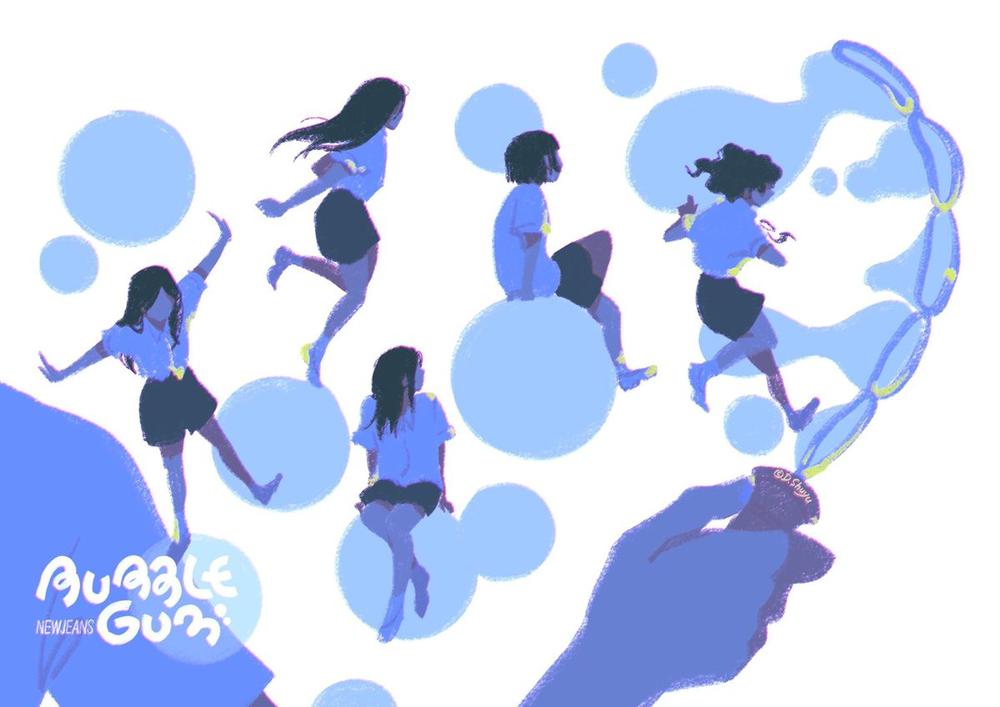

Animación Dinámica 2026

Índice de actividades
PARCIAL 1 Actividades de la materia de Animación Dinámica.
-
Actividad 1. Página HTML Básica
-
Actividad 4. Arte y Animación en Canvas
PARCIAL 2 Actividades de la materia de Animación Dinámica.
-
Actividad 2. Animación Rotación al Mouse
Actividad 3. Animación con onda sinoidal/coseno
Participaciones de la materia de Animación Dinámica.
-
Participación 1. Página Golden Globes
-
Participación 2. Reto Canvas
Proyectos de la materia de Animación Dinámica.
-
Parcial 1. Interactivo con Teclado